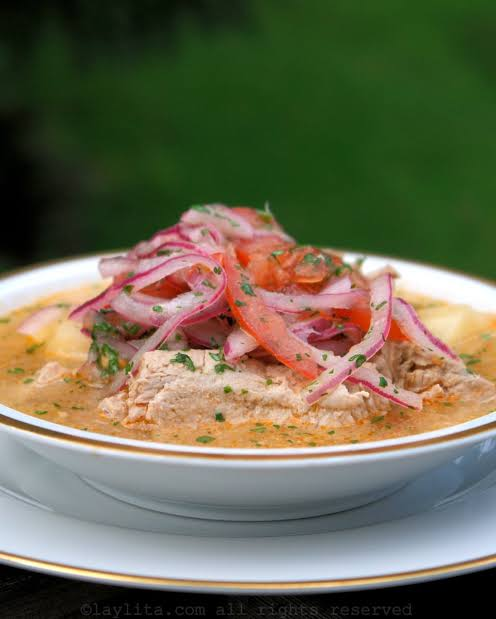

Tutorial de Encebollado

1 Para la base del caldo (El sabor)
- Pescado: 1 a 2 libras de albacora (o atún fresco)
- Vegetales para el caldo: 3 tomates, 1 pimiento verde, 4 a 5 dientes de ajo, 2 tallos de apio y 2 ramas de cebolla blanca.
- Hierbas aromáticas: Un atado de cilantro, perejil y, opcionalmente, hierbabuena o albahaca.
- Especias: Comino, pimienta negra, orégano seco, sal al gusto y 1 a 2 cucharadas de ají para seco (o pasta de ají peruano) para el color
2 Para la yuca
- Yuca: 1.5 a 2 libras de yuca fresca.
- Agua y sal para su cocción.
3 Para acompañar y servir
- Encurtido de cebolla: 2 a 3 cebollas coloradas (paiteñas) cortadas en pluma.
- Toque cítrico: Zumo de limón.Decoración: Cilantro finamente picado.
- Acompañamientos: Chifles (plátano verde frito), pan, canguil, tostado o arroz.
- Aderezos: Aceite y salsa de ají